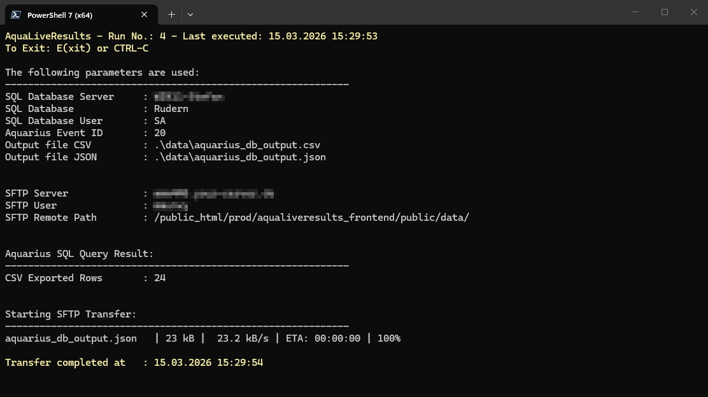
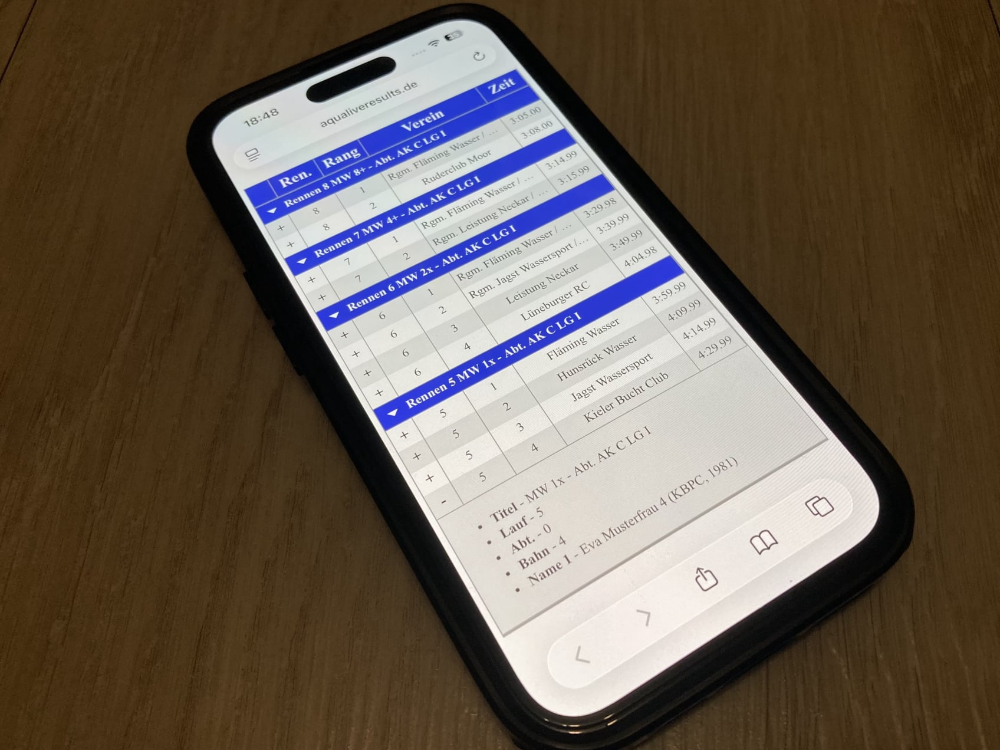

Drag and Drop Website BuilderEine skalierbare Implementierung für Live Ergebnisse aus der Regatta Software Aquarius
AquaLiveResults ermöglicht die Echtzeit-Anzeige von Regatta-Ergebnissen aus der im Rudersport weit verbreiteten Software Aquarius. Die Ergebnisse werden auf einer Webseite dargestellt, sodass Athleten, Publikum und Veranstalter sie direkt nach dem Zieleinlauf abrufen können ohne auf den Aushang der Ergebnisse zu warten.
Zielgruppe
Rudervereine und Regatta-Veranstalter, die eine Lösung für die Live-Anzeige von Ergebnissen suchen ohne das Rad individuell neu zu erfinden.
Athleten und Trainer, die schnell und unkompliziert auf ihre Wettkampfdaten zugreifen möchten.
Zuschauer und Medien, die aktuelle Informationen zu Rennen und Platzierungen benötigen.
Durch folgende Architektur ist AquaLiveResults beliebig skalierbar und wurde bereits an Regatta-Wochenenden mit über 1.000 Athleten erfolgreich eingesetzt. Der Einsatz von AquaLiveResults war so erfolgreich, dass nach wenigen Stunden vollständig auf den Papier-/Aushang Prozess verzichtet wurde.
Backend
Ein PowerShell-Skript, das die Daten aus der Aquarius-Datenbank ausliest, aufbereitet und per SFTP an den Webserver überträgt.
Frontend
Eine Webanwendung, die speziell für die Darstellung großer, responsiver und dynamisch geladener Tabellen optimiert ist und auf Smartphones, Tablets und Desktops funktioniert.
Design Grundlagen - KISS - Keep it simple, stupid.
Das Backend Skript erzeugt mit jedem Lauf, im Standard alle drei Minuten, einen Extrakt der gesamten Veranstaltung aus Aquarius (genauer aus dem SQL Server) und überträgt dieses als komprimiertes JSON zum Webserver. Einen Delta Merge Mechanismus gibt es mit Absicht nicht. Durch den vollen Extrakt ist das Ergebnis immer konsistent, unabhängig davon was und wann in Aquarius geändert werden.
Die Praxis zeigt, dass das JSON im Laufe von zwei Veranstaltungstagen auf ca. 700 KB anwächst.
Daraus ergibt sich für 400 Übertragungen (zwei Tage je 10 Std., alle 3 Min.) ein komprimiertes Transfervolumen von ca. 60 MB - in Summe für beide Tage.
Dieses geringe Transfervolumen rechtfertigt keinen Aufwand für einen evtl. fehleranfälligen Delta Merge, der die Komplexität im Backend und Frontend erhöht.
Eine Transferintervall geringer 3 Min. ist ebenso kaum relevant, da erst mit dem Zieleinlauf eines jeden Rennens neue Ergebnisse vorliegen. AquaLiveResults selektiert zudem nur Ergebnisse im Status "offiziell" aus Aquarius. Die Regattaleiter setzen Rennen oft blockweise oder nach Abschluss aller Läufe auf "offiziell", so dass in der Praxis etwa alle 10-15 Min. neue offizielle Ergebnisse für einen sinnvollen Extrakt vorliegen.
Auf der Frontend Seite sind Filter zwar möglich, da das Ergebnis sich aber in der Reihenfolge des Zieleinlaufes aufbaut (das neuste Ergebnis ist immer oben) haben sie sich als nicht notwendig herausgestellt und würden die UI auf einem kleinen Smartphone (z.B. einem iPhone SE) unnötig sperrig machen. Die Praxis hat gezeigt, dass diese Vorgehensweise erstaunlich gut funktioniert. Da die Tabelle als Virtual DOM aufgebaut wird und die Inhalte dynamisch nachgeladen werden, ist auch das Rendern von zwei vollen Regattatagen problemlos.

Backend
Ein PowerShell-Skript, das die Daten aus der Aquarius-Datenbank ausliest, aufbereitet und per SFTP an den Webserver überträgt

Frontend
Eine Webanwendung, die speziell für die Darstellung großer, responsiver und dynamisch geladener Tabellen optimiert ist und auf Smartphones, Tablets und Desktops funktioniert.
Die Tabellenzeilen können expandiert werden um Titel, Lauf, Abteilung, Bahn und Namen der Mannschaft anzuzeigen.
Das PowerShell-Skript liest die Regatta-Daten aus Aquarius aus und überträgt sie per SFTP an den Webserver. Es läuft auf einem lokalen Rechner und ist hier verfügbar:
Frontend-Komponente
Die Webanwendung rendert die übertragenen Daten als responsive Tabellen und ist für den Einsatz auf Smartphones, Tablets und Desktops optimiert.
AquaLiveResults_Frontend bei GitHub
Stefan Kozlowski
Bamberger Str.. 2
97437 Haßfurt
info@aqualiveresults.de
Haftungsausschluss (Disclaimer)
Die Inhalte dieses Open-Source-Projekts werden mit größter Sorgfalt erstellt. Dennoch übernimmt der Betreiber dieser Website keine Gewähr für die Richtigkeit, Vollständigkeit und Aktualität der bereitgestellten Informationen. Die Nutzung der angebotenen Informationen und Daten erfolgt auf eigenes Risiko des Nutzers.
Für Schäden materieller oder immaterieller Art, die durch die Nutzung oder Nichtnutzung der dargebotenen Informationen bzw. durch die Nutzung fehlerhafter und unvollständiger Informationen verursacht wurden, haftet der Betreiber dieser Website nicht, sofern ihm nicht nachweislich grobes Verschulden vorliegt.
Externe Links auf fremde Webseiten unterliegen nicht der Verantwortung des Betreibers. Für den Inhalt der verlinkten Seiten sind ausschließlich deren Betreiber verantwortlich.
Hinweis zum Open-Source-Charakter
Dieses Projekt wird privat und ohne kommerzielle Absicht betrieben. Der Quellcode steht unter der MIT-Lizenz und ist auf Gitlab frei verfügbar.
Urheberrecht
Alle auf dieser Website verwendeten Ressourcen (Code, Bilder, Texte, Grafiken, etc.) stehen unter klar definierten, freien Lizenzen. Dazu gehören:
Code: MIT-Lizenz (sofern nicht anders angegeben)
Bilder: Unsplash-Lizenz, Pixabay-Lizenz oder Creative Commons CC0
Texte/Grafiken: Creative Commons BY-SA oder ähnliches
Datenschutzhinweis
Diese Website erhebt keine personenbezogenen Daten. Falls technische Protokolle (z. B. Server-Logs) anfallen, werden diese ausschließlich zur Fehlerbehebung genutzt und nicht an Dritte weitergegeben.
Betreibt ein Anwender AquaLiveResults, befinden sich die Daten jederzeit in Obhut und Kontrolle des Betreibers. Er ist somit jederzeit selbst verantwortlich.
Die Demodaten sind von Hand erstellt und beziehen sich auf Max Mustermann und Eva Musterfrau. Die Vereinsnamen sind zufällig.
Drag and Drop Website Builder